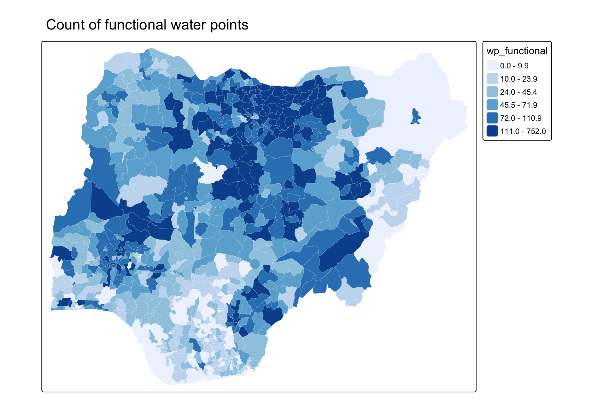

Code
if (!require(pacman)) install.packages("pacman")
pacman::p_load(sf, tmap, tidyverse)
NGA_wp <- read_rds("data/rds/NGA_wp.rds")Analytical Mapping
Jedidiah Asaf T
This hands-on exercise recreates the key techniques from Chapter 23 of R for Visual Analytics. Using a prepared sf object of Nigeria’s water points at the LGA level, it demonstrates analytical mapping - why we map rates rather than raw counts, and how to build a percentile map to expose extreme values.
Note:
sfandtmapdepend on the system libraries GDAL, GEOS and PROJ.
The count of functional water points is turned into a proportion of all water points in each LGA.
A count map mostly shows where there are many water points - not where they are working.
ℹ tmap modes "plot" - "view"
ℹ toggle with `tmap::ttm()`
The rate map answers the real question - the share of water points that are functional.
A percentile map is a special choropleth with six unequal classes (1%, 10%, 50%, 90%, 99%) that spotlights the extreme low and high LGAs.
A box map extends the boxplot idea onto the map: it splits the LGAs into six classes - a lower-outlier class, the four inter-quartile classes, and an upper-outlier class - so that both the typical spread and the extreme values are visible at once.
boxbreaks() computes the seven break points (fences and quartiles), and get.var() pulls a variable out of the sf object as a plain numeric vector.
boxbreaks <- function(v, mult = 1.5) {
qv <- unname(quantile(v, na.rm = TRUE))
iqr <- qv[4] - qv[2]
upfence <- qv[4] + mult * iqr
lofence <- qv[2] - mult * iqr
# initialize break points vector
bb <- vector(mode = "numeric", length = 7)
# logic for lower and upper fences
if (lofence < qv[1]) { # no lower outliers
bb[1] <- lofence
bb[2] <- floor(qv[1])
} else {
bb[2] <- lofence
bb[1] <- qv[1]
}
if (upfence > qv[5]) { # no upper outliers
bb[7] <- upfence
bb[6] <- ceiling(qv[5])
} else {
bb[6] <- upfence
bb[7] <- qv[5]
}
bb[3:5] <- qv[2:4]
return(bb)
}
get.var <- function(vname, df) {
v <- df[vname] %>% st_set_geometry(NULL)
v <- unname(v[, 1])
return(v)
}boxmap() wires the helpers into a tmap v4 choropleth, labelling the six classes from lower outlier through to upper outlier.
boxmap <- function(vnam, df,
legtitle = "Box map class",
mtitle = "Box Map") {
var <- get.var(vnam, df)
bb <- boxbreaks(var)
tm_shape(df) +
tm_polygons(
fill = vnam,
fill.scale = tm_scale_intervals(
breaks = bb,
values = "-brewer.rd_bu",
labels = c("lower outlier", "< 25%", "25% - 50%",
"50% - 75%", "> 75%", "upper outlier")
),
fill.legend = tm_legend(title = legtitle),
col = "white",
lwd = 0.1
) +
tm_title(mtitle)
}Applying boxmap() to pct_functional highlights the outlier LGAs at both ends of the distribution.
In this exercise, I learned the single most important lesson in thematic mapping: map rates, not counts. A count map of functional water points simply re-draws where water points are dense, whereas the rate map reveals where provision is actually failing. I also learned to build a percentile map using custom quantile() breaks, which deliberately isolates the extreme 1% and 99% LGAs - the places that most need attention - instead of hiding them inside broad equal classes.